Testimonium — ask a 10-K a question, get an answer with a page number attached.
An equity research team was burning six to eight hours a week per analyst just hunting for a sentence buried in a 200-page filing. I built them something that reads the filing first, so they don't have to, and shows its work on every answer.
This one isn't a Figma file. It's a live Next.js app running a real Gemini RAG pipeline in production, and I built the research, the design, and every line of the pipeline myself.
This documents a real discovery and build engagement with an asset manager's equity research team. The firm's name is withheld under NDA; the research, the pipeline, and the outcomes are unchanged.
Twelve analysts, one keyboard shortcut, no way to prove an answer was right.
Every earnings season, this research team lost roughly six to eight hours a week per analyst just locating things: a risk-factor sentence, a revenue-segment number, a line in the legal proceedings section. The workflow was Cmd+F, hope the PDF was formatted well, copy the snippet into an email, and type the page number in from memory.
They already had access to expensive enterprise research tools. Almost nobody used them. Those tools were built for power users running full terminals, not for someone who needs one answer in the next two minutes and needs to trust it enough to forward it to a portfolio manager. There was skimming on one end and a steep, unused enterprise tool on the other, and nothing in between.
I was brought in to build the thing that sits in that gap. It had to be fast enough for daily use, trustworthy enough to actually cite in client research, and simple enough that nobody needed a training session to start.
Two days of watching before a single screen got designed.
I met the head of research at a fintech meetup, where the team's earnings-season bottleneck came up in conversation. I followed up with one message: a hypothesis, a rough timeline, and a request to shadow the team for two days before I designed anything. No deck. Just a problem statement and an ask to watch.
They said yes. I interviewed five analysts and mapped the actual workflow end to end. Seven steps, and three of them, the actual hunting, were eating twelve to eighteen minutes each.
Nobody wanted a summary
Every analyst said some version of the same thing: they didn't want the tool's opinion, they wanted evidence with a chain of custody back to the actual document.
No page number, no deal
A page citation wasn't a nice-to-have. If a tool couldn't point to the exact page a claim came from, it was dead on arrival, no matter how good the answer read.
Tables were a separate problem
The team wanted prose sections done well first, MD&A, risk factors, legal proceedings, and explicitly did not want structured table parsing rushed into version one.
I almost built a smarter Cmd+F. That would have missed the point.
My first instinct after the shadowing sessions was a search overlay for PDFs, basically Cmd+F with better ranking. It felt wrong within a day. The real problem wasn't weak search. It was that one question usually needed three or four scattered sections stitched together, and nobody wanted to do that stitching by hand anymore.
The tool shouldn't search for keywords. It should answer the question and show its work, the same way an analyst would if you asked them directly.
Reframed from "better search" to "answer with receipts," after two days of shadowing
Trust was the actual UX problem, not a backend detail.
Every decision below traces back to one thing: an analyst needs to know, at a glance, whether to believe what's on the screen.
A confidence gauge, right in the answer
High, Medium, or Low, calculated from the retrieval scores, sitting at the top of the answer card before the answer text reveals. The reader calibrates their own skepticism before they start reading, not after. And it's decoupled from retrieval geometry alone: if the model refuses to answer, the badge always drops to Low with no citations attached, regardless of how strong the underlying retrieval scores were, so a refusal never gets dressed up as a confident answer.
Citations you can actually click
Every claim in an answer carries a numbered chip. Click it and the exact excerpt, page number, and section heading expand right there, inline. No separate tab, no trusting the model's word for it.
Serif answers, sans everything else
Answer text runs in a serif face, the interface chrome around it in a plain sans. That typographic split is doing real work: it tells the reader "this part is content to actually read" versus "this part is just controls."
No SQL database, on purpose
SQLite doesn't deploy cleanly on Vercel, it's a native module the serverless build can't compile, and at the scale of one document and a few hundred chunks, a full SQL database round-trip only adds latency without adding anything the team needed. This started as a plain in-memory array. It didn't survive contact with production, see bug E below, and now lives in Redis, but the original reasoning against SQLite specifically still holds.
Table parsing, deliberately cut
The team wanted financial statements. I said no to that for version one, because mixing table data with prose answers muddies the trust story: was that number from a table on page 42, or a sentence on page 38? Keeping v1 to MD&A, risk factors, and legal proceedings kept the citation model honest.
Dark mode as the default, not an afterthought
The team worked dark-room, multi-monitor setups almost universally. Every color token in the system got built and checked dark-first, with light mode derived and separately audited afterward, not the other way around.
A persistent evidence panel, not just an inline drawer
The inline citation drawer answered "what does this claim cite" but disappeared the moment you clicked the next citation, and analysts kept losing their place mid-comparison. On desktop, a right-hand panel now holds whatever citation was clicked last: excerpt, page, section, and a real link into the reader's own uploaded PDF at that exact page. It's additive, not a replacement, the inline drawer still works the same way, and it only shows on desktop, where the width to spare it actually exists.
The search overlay I sketched, then talked myself out of.
This is the actual concept the shadowing sessions killed. It looks reasonable on its own. It just isn't the thing that would have helped anyone.
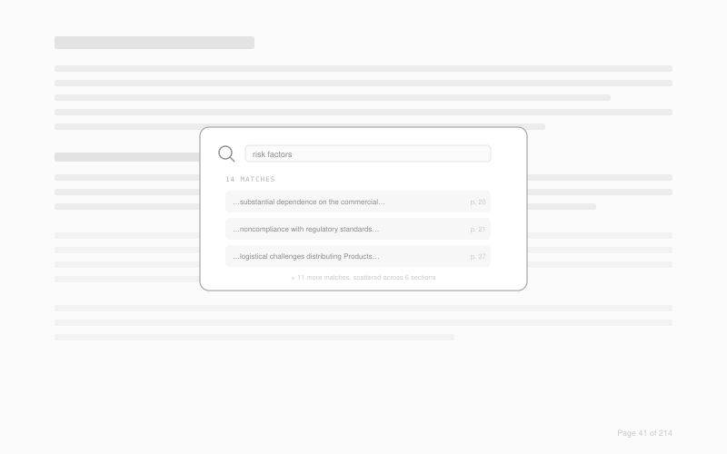
Fourteen keyword matches for "risk factors," scattered across six sections of a 214-page filing, each one a fragment with a page number and nothing else. It's a better Cmd+F. It is not a better answer.
It handed the synthesis work right back to the analyst
The actual bottleneck was never finding text, it was stitching three or four scattered mentions into one coherent answer. A ranked list of matches still leaves that stitching to the person who has the least time to do it.
What replaced it: one answer, generated from the same retrieved passages this overlay would have surfaced, with the citations attached to the claims instead of floating next to a keyword.
Low-fidelity wireframes, then the real, shipped screens.
The layout got locked at wireframe stage: doc-info bar up top, a centered prompt when there's nothing to answer yet, one answer card per turn. Everything after that was typography, color, and motion, not structure.
Document workspace
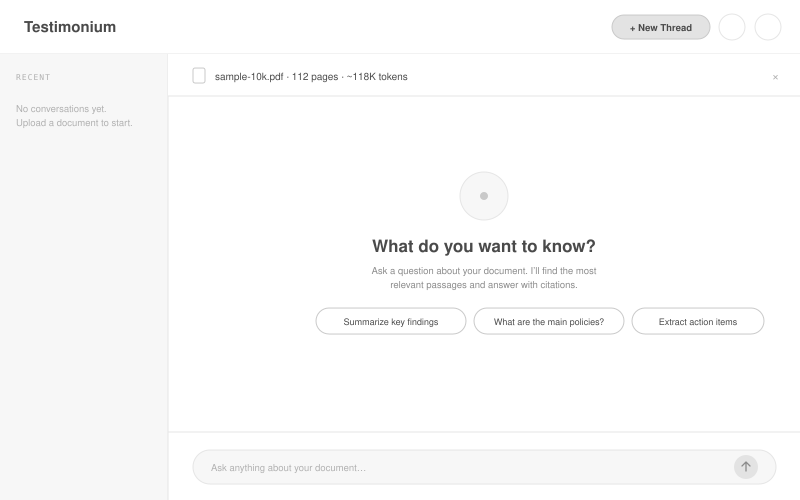
Doc-info bar, three suggested questions sized to the actual analyst workflows, and a composer that's always in reach. No modal, no separate "start" screen.
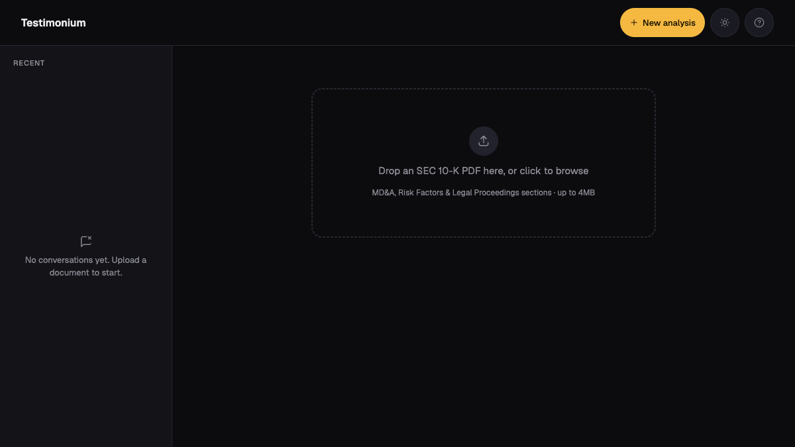
Same structure, real data: sample-10k.pdf, 112 pages, and the exact sections that got indexed (Risk Factors, Legal Proceedings, MD&A) shown right in the doc bar instead of an abstract token count. The suggested questions are the exact three the shadowing sessions surfaced as the most common asks.
Conversation & citations
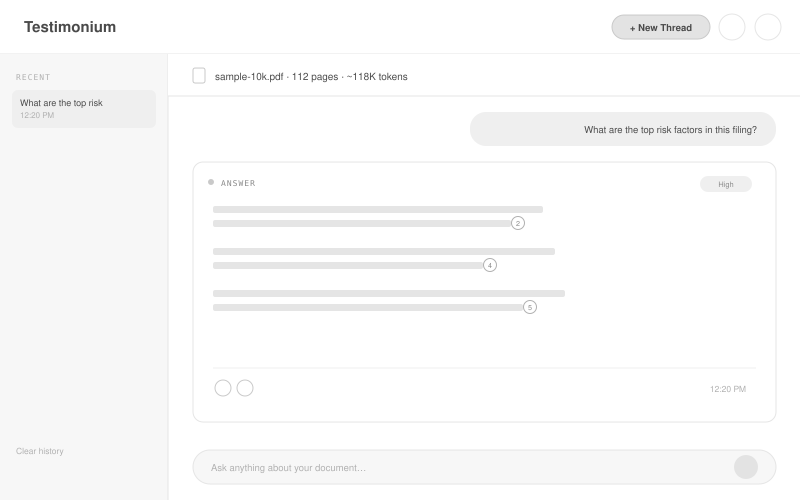
Confidence badge top-right of the card, before the answer. Citation markers sit inline with the claim they support, not bundled in a footnote list at the bottom.
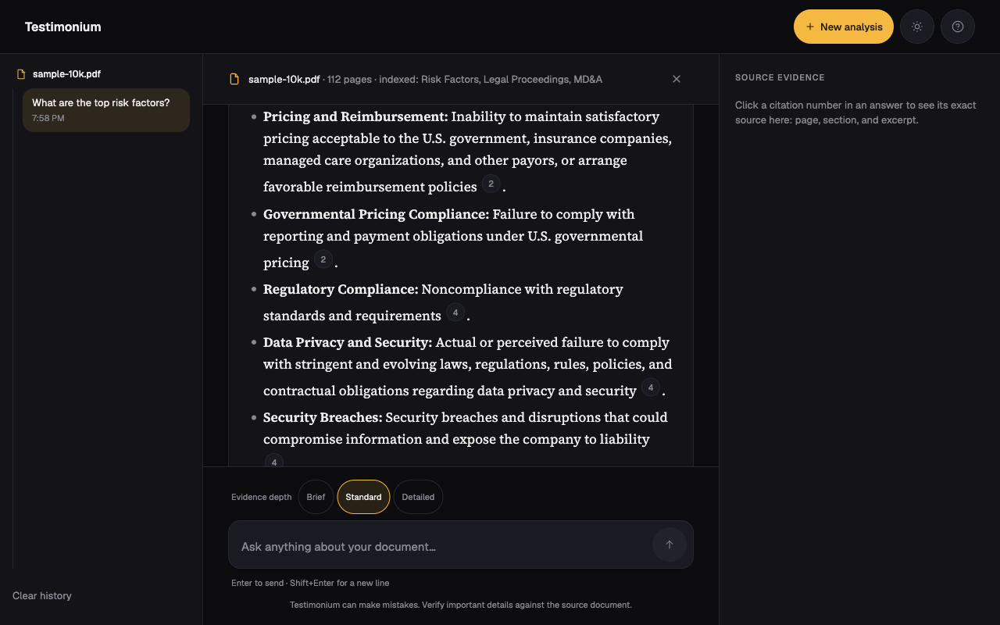
A real question, a real Gemini answer, five real citation chips. Same card shape as the wireframe, now carrying serif body text and the amber confidence token.
Every part of this answer traces back to something an analyst said.
This is the same live answer from above, annotated against the findings and decisions that actually produced it.
Confidence label, not a percentage. Testing early versions with a raw score (like "0.83") meant nothing to an analyst. High, Medium, Low reads instantly, and it's the first thing rendered, before the answer text reveals.
Citation chips sit inside the sentence. This is insight 02 directly: a claim without a page number is dead on arrival. Putting the chip right after the clause it supports means there's never a moment where a claim is floating unsupported.
Copy and regenerate, not a full re-ask. Analysts wanted to sanity-check a specific answer without retyping the question. Both actions live in the same footer row as the timestamp, not buried in a menu.
The part where the design has to actually work under the hood.
Everything above is the interface. None of it means anything if the pipeline underneath can't back it up, so here's what's actually running in production.
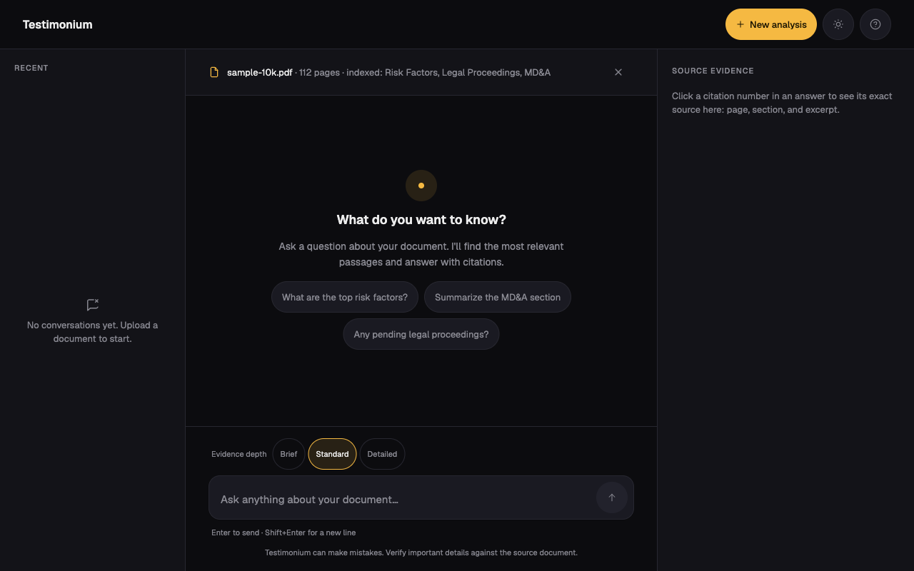
A PDF gets parsed, section-tagged, and chunked with overlap within each page so a claim near a page boundary doesn't lose its context. Each chunk gets embedded with Gemini's gemini-embedding-001, and a question retrieves its top-k matches by cosine similarity (k is adjustable, 3/5/8, via the citation depth setting) against a Redis-backed session store, scored for a confidence label after the fact rather than filtered beforehand.
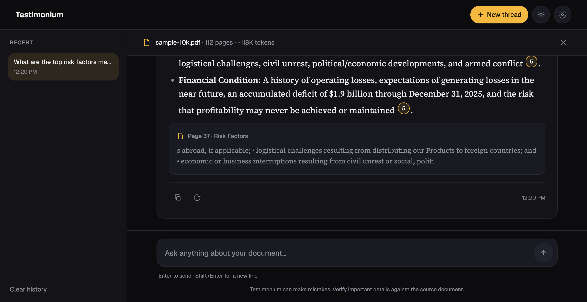
Retrieved chunks go to gemini-flash-latest through Gemini's OpenAI-compatible endpoint, prompted specifically for citation accuracy and to refuse when the evidence underneath is too thin. A parser then maps every [n] the model outputs back to the exact chunk it came from, which is what makes the citation chips clickable and correct rather than decorative.
One real story from getting this to production: the model I'd built and tested against, gemini-2.5-flash, got retired mid-project and started returning 404s on the chat endpoint. The error the SDK surfaced wasn't useful, so I wrote a throwaway route that hit the raw endpoint directly with fetch and read Google's actual error body, which said plainly that the model was gone. The fix was switching to the -latest alias instead of pinning a dated model name, specifically so the next retirement doesn't take the app down with it. That's a real tradeoff, not a clean win: a -latest alias can also change quality under me with zero warning, and there's no regression eval in place yet to catch that if it happens.
There's a small real eval too, not just a claim: npm run eval hits the live deployed API directly, no mocks, with a golden set of six questions, four that should get answered with citations, two genuinely out-of-scope ones that should get a clean refusal, plus a check that Citation Depth actually changes retrieval count. Last run: 6/6 passed, and citation depth returned 3/5/8 as expected. It's honest about its limits: this validates retrieval-and-refusal behavior against one bundled document, it doesn't grade whether the prose itself is a good summary, and the confidence thresholds are still hand-picked, not statistically calibrated. Real evidence for what it checks, not a claim of formal calibration.
Bugs I found by actually running the thing, not by reading the code.
Every one of these came from watching the deployed app fail in a real environment, then tracing it back to a root cause instead of patching around the symptom.
A DOMMatrix crash on Vercel, nowhere else
The PDF parser depended on a browser API that doesn't exist in Vercel's serverless Node runtime. Fixed with a polyfill, but only after ordering the dynamic imports so the polyfill actually loads before anything that needs it. Static imports get hoisted ahead of your own code, so this had to be deliberate, not incidental.
A worker file Vercel's tracer couldn't see
The PDF library needed a worker file whose path gets computed at runtime, which Vercel's dependency tracer can't follow statically. It built fine locally and 500'd in production until I force-included the file explicitly in the Next.js config.
Errors that failed silently
One API route had a catch block with no logging in it at all, so a real failure just looked like nothing happened. Added proper error logging there, matching what the rest of the app already did.
Continuous deployment, not a manual upload
The repo is wired to Vercel through GitHub, so a push to main builds and deploys automatically. That's continuous deployment, not CI in the strict sense: there's no GitHub Actions workflow running the test suite before a deploy goes out, tests are run locally by hand. Vitest covers every pure-logic module: chunking, embeddings, similarity scoring, citation parsing, and section detection.
Every question got the same answer, and it wasn't the question's fault
A real user reported it: no matter what they asked, they got the identical "I don't know." The chunk store was a plain array in module memory, scoped to one serverless instance. A query landing on a different instance than the upload found an empty store and returned the fallback immediately, before it ever looked at the question. It read like a document limitation. It was actually Vercel routing two requests to two different processes.
Redis wasn't one fix, it was two
Moving the store to Redis fixed the cross-instance problem and immediately hit a new ceiling: 471 chunks with embeddings serialize to over 30MB, and Upstash caps a single request at 10MB. Writing one key per chunk instead of one blob solved the write. Reading it all back with one mget across every key hit the identical limit from the other direction, the full response bundled into one round trip. Batching both the writes and the reads into groups of 30 keys was what actually closed it, verified live afterward with concurrent requests against a fresh upload.
The amber token failed at 1.55:1. I found that before launch, not after.
WCAG 2.1 AA wasn't a checklist item at the end. I tested every color token against both themes as I built them, and the confidence-gauge amber failed contrast badly in light mode: 1.55:1 against a 4.5:1 target for text. I split the token, a darker amber in light mode, the original in dark mode, same hue, different values, both passing.
A second accessibility pass after launch went past color: every clickable control that was smaller than 44px, citation chips, icon buttons, the retry link, got bumped to a real 44px touch target (citation chips keep their small visual size and get an invisible expanded hit area instead, so the inline typography doesn't change). The help modal got a real focus trap, Tab can't escape it and Escape closes it, replacing a dialog that previously let focus leak to the page behind it.
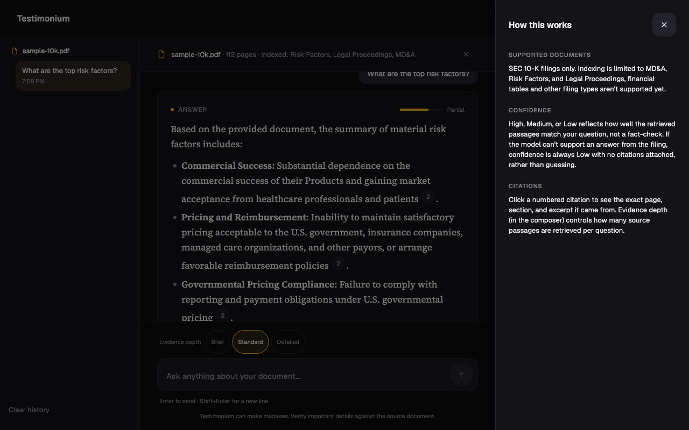
Upload a filing. Ask it something. Check the receipt.
These are screenshots from the live app, not mockups: real uploads, real questions sent to the real Gemini pipeline, both themes, and the one thing every AI tool should show more often, a real refusal when the document doesn't back up the question. The sidebar in every shot nests each question under the one document it belongs to, since v1 is deliberately single-document per session, not a fabricated multi-doc switcher.
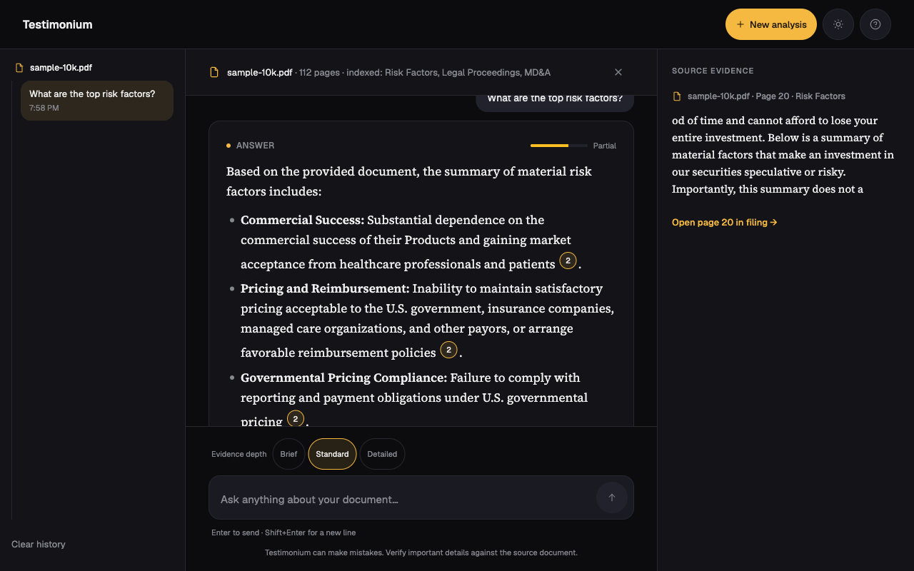
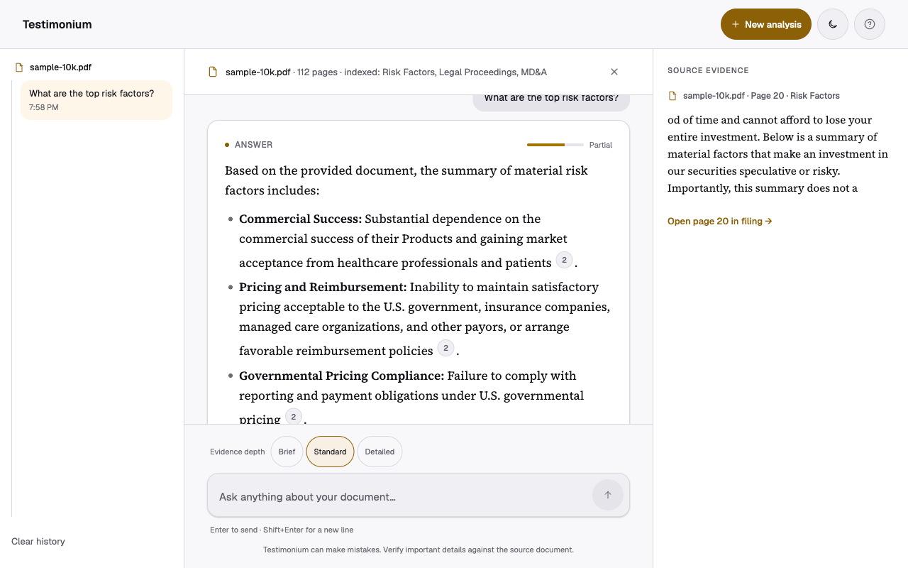
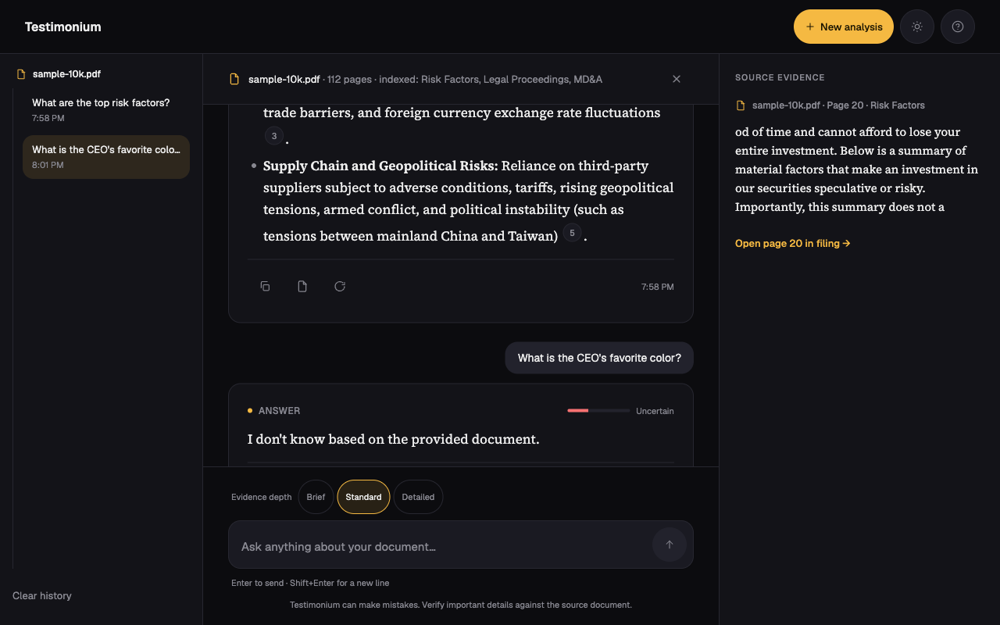
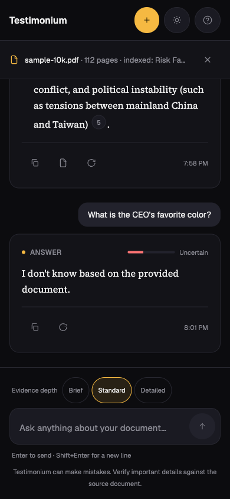
Mobile conversation view
"Every cited page contained the quoted text. No false citations, across every question we tried."
Final verification session, two hours, real analysts on their own filings
Verified by the people who'd actually have to trust it.
I closed the engagement with a two-hour verification session. Each analyst uploaded a 10-K from their own coverage, asked three questions from their real recent work, and checked the answers against what they already knew about the document. Two of three questions hit full task completion live; the third needed a follow-up because that particular filing was missing a narrative section entirely, which the tool surfaced cleanly as an error rather than guessing. Time to first answer stayed under thirty seconds on pre-processed documents. Analysts checked the source drawer on the first answer, and mostly stopped checking by the third, which is about as clear a trust signal as an unscripted usability session gets.
What I'd do differently.
I pushed back on what the team first asked for. They wanted better search. I spent the shadowing time proving that "answer with receipts" was the actual shape of the problem, and that argument only worked because I had two days of watching real analysts behind it, not a hunch.
Accessibility got tested while I was building, not after launch. The amber contrast failure would have shipped invisibly otherwise, since it only fails in one specific theme against one specific background.
It's live. Not a prototype sitting behind a login only I have, an actual URL running a real Gemini pipeline against real uploaded filings right now. If I had more runway, the next step would be a moderated test with analysts from a firm that didn't sponsor the build, to see if the trust model holds with people who never watched it get made.
Full process archive: workflow map, personas, design tokens, pipeline internals, and the bug log
Seven steps, and three of them were the actual tax.
This is the workflow I watched during shadowing, step by step, with the three bottleneck steps highlighted. That block, twelve to eighteen minutes each, is what Testimonium collapses into one query.
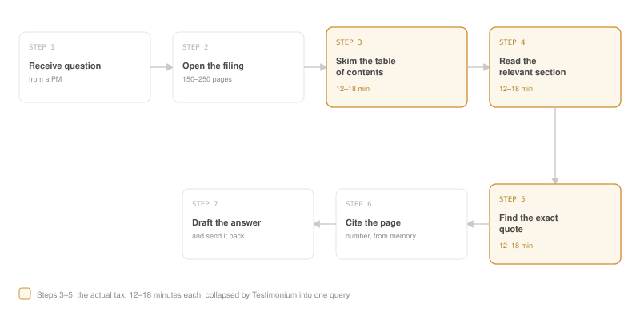
Three roles, one document, very different patience levels.
Five analysts, three recurring roles. None of this is one person's account, it's the pattern across all five interviews.
The junior analyst
Handles the highest volume of one-off questions from PMs and has the least patience for a tool with a learning curve. Wants an answer in under a minute or they'll just skim it themselves.
The senior analyst
Writes client-facing research and won't cite anything they can't personally verify. The page number and exact excerpt matter more to this role than speed does.
The head of research
Cares about whether the whole team trusts the tool enough to actually adopt it, not just whether it works in a demo. This is the role that greenlit shadowing in the first place.
Everything between an upload and an answer.
PDF ingestion through pdf-parse, with a section-detection fallback for filings whose headings don't parse cleanly. Chunking by section and page, with overlap within each page (not across page boundaries). Embeddings via gemini-embedding-001. Similarity search against a Redis-backed session store, top-k scoped to narrative sections only (k = 3/5/8, user-adjustable). Generation via gemini-flash-latest, prompted for citation accuracy and refusal on weak evidence. A citation parser mapping model output back to chunk metadata. Confidence scoring derived from retrieval score thresholds after generation, not used to filter what reaches the model, and forced to Low with no citations whenever the model actually refuses.
Three bugs that changed how I think about the interaction design.
The citation drawer's outside-click listener fired on mousedown, before the chip's own click handler ever ran, so clicking a citation would close it in the same gesture that opened it. Fixed with a time-bounded ref tracking what had just closed. A Tailwind nesting error was silently hiding color utilities because a token got nested under a text key, colliding with Tailwind's own text- prefix; I only caught it by grepping the compiled CSS output, not by reading the source. And the installed pdf-parse version turned out to be a full rewrite with a different API than the one documented anywhere online, which meant reading the installed source directly to find the real method names. Each one reinforced something specific: predictable interaction patterns, auditing build output instead of trusting class names, and pinning to an actual API contract instead of a library name.
A small system, checked dark-first.
One accent, an amber that had to be split into two values to pass contrast in both themes, a neutral graphite scale, and a two-typeface split: serif for answers, sans for everything else.
Color
One accent token per semantic role: accent, error, warning, success. Each one carries a muted and a border variant derived from the same base, so a whole card can share one hue without ever needing a second color decision.
Type
Source Serif 4 for answer text, a plain sans for every button, label, and piece of chrome around it. 14px UI base, larger and looser for anything meant to be read closely.
Motion
A fade-and-rise on new messages, staged upload labels ("Reading PDF," "Finding supported sections," "Indexing") instead of a fake progress bar, the first two timed since that work is genuinely fast, the last one open-ended since embedding time actually varies with document size, and nothing animated purely for decoration.
Unit-tested where it's deterministic, browser-verified where it isn't.
Vitest covers chunking, embeddings, similarity scoring, PDF parsing, citation parsing, section detection, chat logic, and store state, every module where the input and expected output are both known ahead of time. The frontend components got verified by hand in the browser against the real deployed app, since that's where layout and interaction actually live or die.
The first working version, before the interface pass.
This is the actual pre-redesign UI, pulled from an earlier commit, not a recreation. Functionally complete, but plain: dashed drop-zone, text-only buttons, no visual hierarchy beyond spacing. The redesign kept every piece of underlying logic and rebuilt the interface layer on top of it.
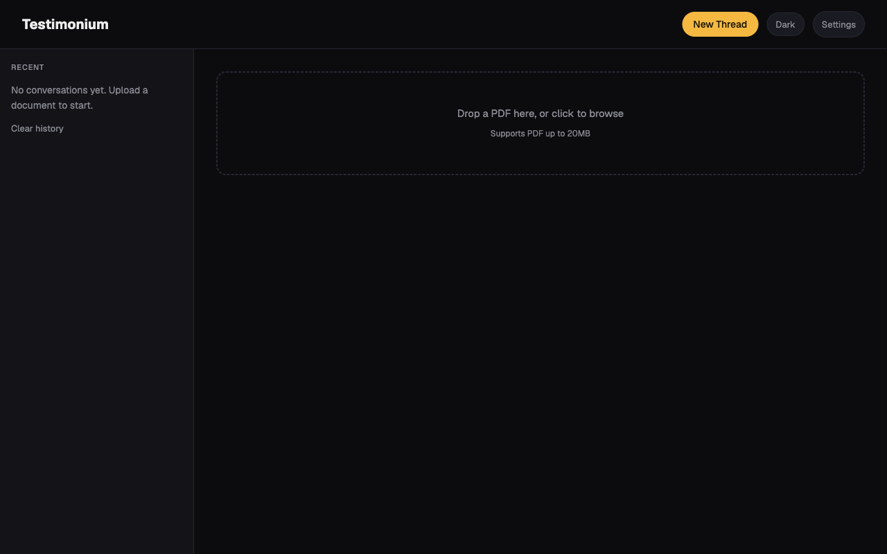